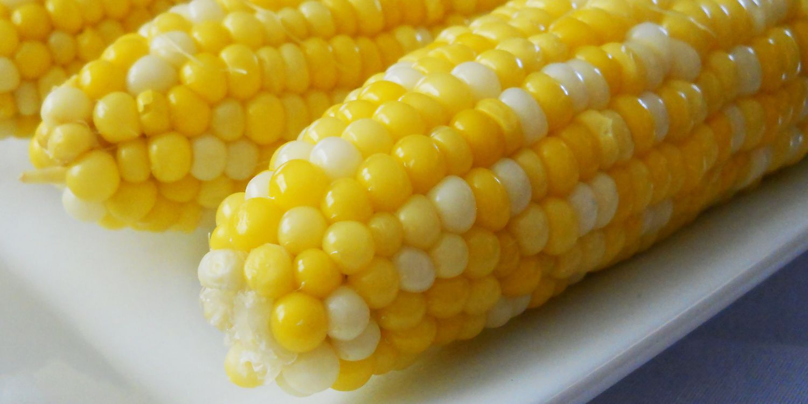

Sweet and Easy Corn on the Cob

Description
You can’t go wrong with boiled corn on the cob — and this top-rated recipe is proof of that!
Ingredients
- 2 tablespoons white sugar
- 1 tablespoon lemon juice
- 6 ears corn on the cob, husks and silk removed
Directions
- Fill a large pot about 3/4 full of water and bring to a boil. Stir in sugar and lemon juice until sugar is dissolved.
- Gently place ears of corn into boiling water, cover the pot, turn off the heat, and let corn cook in the hot water until tender, about 10 minutes.
- Enjoy!
Back